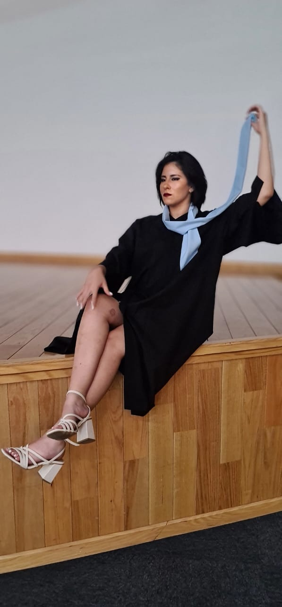
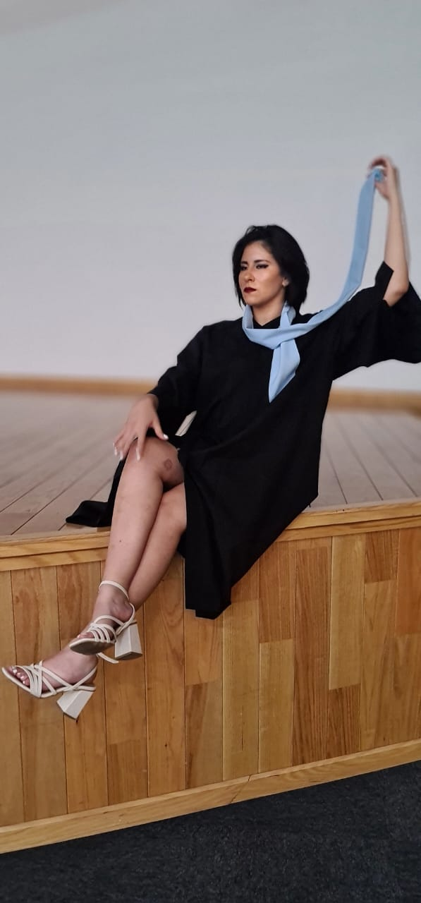

Armenta Peña Abril ✨
![Foto con 3 personas en ella: 1 adulto mayor con canas(el padre), una mujer madura rubia y de cabello corto(madre), una mujer jovén de cabello muy oscuro(hija). Los tres están unidos entre sentados y en rodillas en un jardín con un muro por detrás sosteniendo un ramo buchón de rosas y girasoles. La mujer mayor cuenta con un vestido elegante negro haciendo un corazón con la mujer joven que está usando un vestido rojo de fiesta y el hombre adulto mayor usando camisa de vestir portando la medalla de su hija por mejor promedio de la generación.](./imagenes/familia.jpg) 

Armenta Peña Abril
Nacida un 12 de mayo del 2002, en el corazón de una familia llena de raíces fuertes y contrastes: con un padre sinaloense y una madre de Atotonilco, Jalisco. Abril creció en un entorno donde la tenacidad, la calidez y el ingenio iban de la mano. Es la hermana menor de tres, compartiendo la vida desde la cuna con su gemelo Armenta Abraham y aprendiendo del camino trazado por su hermano mayor, Armenta Moises.
Egresada de Ingeniería Mecatrónica, desde temprana edad se sintió atraída por el funcionamiento profundo de las cosas. No sólo desmontaba aparatos: buscaba entender cómo mejorar el mundo con sus manos y su mente. Pero su curiosidad no se detuvo ahí.
Hoy, su camino se ramifica en muchas direcciones: está cursando un programa semiescolarizado de enfermería —porque le mueve el deseo de cuidar y entender el cuerpo humano—, se entrena en natación —como forma de disciplina, escape y salud—, y estudia inglés para abrirse puertas más allá de las fronteras. Además, se está formando como desarrolladora web en un bootcamp intensivo, donde domina JavaScript, Git, y estructuras fundamentales de la programación moderna.
Sabe que el futuro no es un solo carril. Por eso también está sembrando las bases de su propio emprendimiento, un proyecto que reflejará todas sus pasiones y aprendizajes, y que seguramente nacerá con esa mezcla de lógica, humanidad y creatividad que la define.
Mis hobbies
- Platicar con mi viejo (padre) sobre todos los temas. Lit, mi papá es un hombre muy sabio; me gustá cuando de repente me suelta factos de la historia de México o cuando me hace resumenes orales de la historia universal, cuando me habla de filosofías (materialista, idealista, existencialismo, marxismo, hedonismo, nihilismo, absurdismo y las demás no me acuerdo), cuando me habla de corrientes psicológicas o cuando me explica cómo calcular motores y estructuras de naves (nave es como las bodegas de las fabricas), cuando me habla de gastronomía y de religiones. Lo quiero mucho al señor.
- Ver obras de teatro con mi señor padre o ir al teatro diana cuando hay orquestas
- Salir a comprar vestidos con la autoridad (madre), salir a comprar joyería y hacernos las uñas, escuchar música y bailar con ella.
- Convivir con mis amig@s; mi ganse (no sé su sexo jsjsj), con mis periques (tampoco sé sus sexos jaja), mis gallos, mi gallina y mi perra.
- Ir a natación
- practicar box y levantar mancuernas
- Aprender muchas cosas. Siempre estoy buscando tomar cursos de temas muy variados; ahorita estoy tomando un curso de enfermería, estoy yendo al inglés y me voy a inscribir a uno de mecánica automotriz que ya no soporté estar boba para los carros (autoeléctrico, suspensión y motor: 1 año por cada uno) y si hay chancita en estos días quiero meterme a uno de estilismo profesional (como en las estéticas).
- Jugar videojuegos en consola (xbox). Mis favoritos son: Halo (toda la saga), gears of wars, BioShock, castle crashers, fable, DOOM, Borderlands, Left 4 Dead, outlast, prototype
- Ver anime, la vd soy bien otaku, pero sí me baño y ya no me da verguenza (antes era otaku de closet). De mis animes favoritos: Los jojos, one punch man, los diarios de una boticaria, berserk, demon slayer, death note, baki hanma, el viaje de chihiro, casi todo lo de studio ghibli, dorohedoro, dandadan, tokyo ghoul, AOT, boku no hero academia, vinland saga, hunter x hunter, black lagoon, Naruto, mirai nikki, jujutsu kaisen, lookism, record of ragnarok, beastars, parasyte, terror in resonance, the promised neverland, banana fish, psycho pass, ajin, hellsiing, devil may cry, devilman crybaby...
Música que me gusta
- Ave maria - Schubert
- Danse Macabre - Camille Saint-Saëns
- me and the devil - soap&skin
- La Campanella - Paganini
- Sonata del diablo - Nicolo paganini
- Si No Quieres No - Luis R Conriquez
- La 701 - Panter Bélico
- El Rescate - Marca Registrada
- Si Fuera Fácil - Marca Registrada
- Solo me dejaste - Marca Registrada
- Puro Campeón - Marca Registrada
- Abcdario - Eden Muñoz Ft. Junior H
- CCC - Michelle Maciel, Eden Muñoz
- Chale - Eden Muñoz
- Si Te Pudiera Mentir - Calibre 50
- Si Te Pudiera Mentir - Calibre 50
- El gavilán II - Peso Pluma
- Una mañana - José José
- Mi Buen Amor - Mon Laferte
- Eres - Café Tacvba
- Smile - Lily Allen
- Mi viejo - Piero
- Ella - Leonardo Favio
- Volveré - Diego Verdaguer
- Cama y Mesa - Eden Muñoz
- El ultimo Beso - Polo
- Cómo Te Extraño Mi Amor - Leo Dan
- Te Juro Que Te Amo - Los Terrícolas
- ¿Porqué te vas? - Jeanette
- Nuestro Juramento - Julio Jaramillo
- Contigo - Los Panchos
- Cien años - Pedro Infante
- La bruja - ROSY ARANGO
- La Llorona - Angela Aguilar
- San Lucas - Kevin Kaarl
- Tu Falta De Querer - Mon Laferte
- ayer y hoy - Julio Jaramillo
- Pa Olvidarme De Ella - Piso 21 & Christian Nodal
- Botella Tras Botella - Gera MX, Christian Nodal
- Bella - Wolfine
- Come As You Are - Nirvana
- Por Tu Maldito Amor - Vicente Fernández
- Volver A Comenzar - Café Tacvba
- Wind - Akeboshi